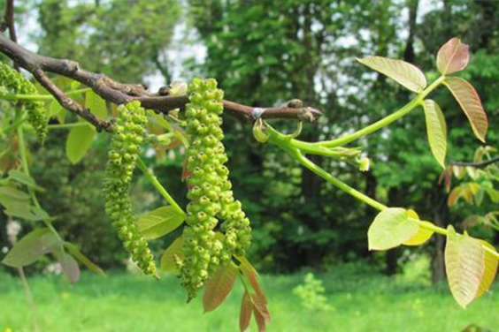

Bienvenidos
Formando terapeutas florales
Servicios
EN GENERAL
Se entiende por terapia floral la administración de esencias florales en gotas. Estas esencias contienen ...
EN NIÑOS
En los bebés y niños pequeños hay un vínculo tan estrecho entre hijo y madre, que es ...
EN ADOLESCENTES
En púberes y adolescentes, remecidos por tormentas hormonales e intensos estados emocionales ...
EN ADULTOS

En adultos suscitan estados emocionales positivos, los que ayudan a la revitalización, a bajar ...
UBÍCANOS
Santa Beatriz 81 dpto 308.
Metro Manuel Montt, Santiago, Chile.
LLÁMANOS
Aclaramos todas tus dudas.
+562 2895 1846 / +569 9821 8904.
ENVIANOS UN MENSAJE
Si quieres contáctanos vía correo:
contacto@tebach.cl
¿Quiénes somos?
• Profesores Oficiales de la AG. de Terapeutas Florales de Chile.
Institución
que certifica la calidad de la formación de la Terapia Floral desde hace más de 23 años.
www.terapeutasflorales.cl
• Colaboradores y Representantes del Laboratorio Deva.
Elaborador de Esencias Florales
desde
más de 30 años.
www.deva-lesemotions.com
María Cecilia Gálvez
Estudio Terapia Floral y Reiki, posteriormente profundizó en el estudio y la aplicación de otros sistemas florales, como las flores California, sistema Bush, las francesas de última generación, sistema cubano Arcoíris de Mejoramiento Humano, Diplomado Terapia Floral Evolutiva, Curso de Perfeccionamiento El Modelo Terapéutico ELATEF, Congreso SEDIBAC España, socia activa, Presidenta Asociación Gremial de Terapeutas Florales por los periodos 2008- 2010 y 2016- 2018. Participa activamente en la organización de cursos de perfeccionamiento para Terapeutas Florales y lleva la terapia floral a través de Chile y otros países del cono sur, tanto en clínica como en conferencias y seminarios. co-autora del libro “Flores y Energía que Sanan” – 2009 y Directora de la Escuela de formación de Terapeutas Florales Santa Beatriz.
María Ester Cespedes
Terapeuta Ocupacional, egresada de la Universidad de Chile en 1972.
Miembro de la Asociación de Terapeutas Florales de Chile. Se formó como terapeuta floral
y
reikista en la escuela de Alida Morales.
Fue gestora cultural de la Sociedad de Escritores de Chile y de la Corporación Letras de
Chile durante una Década.
Escribió los libros:
- "TERAPIA FLORAL PARA NIÑOS DE HOY", escrito junto a su hermana gemela Amanda
Céspedes.
- "FLORES ENERGÍA QUE SANA", escrito junto a su colega María Cecilia Gálvez

FLORES : Energía que sana
Desde que el doctor Edward Bach dio forma a su sistema de 38 remedios florales, el mundo conoce más de medio millar de flores sanadoras. ¿Cómo se logra determinar que una flor posee propiedades curativas? ¿De qué manera actúan en el organismo humano? ¿Curan las dolencias físicas? ¿Sanan también trastornos psíquicos? ¿Las pueden tomar niños? ¿Animales? ¿Cuánto demoran en hacer efecto? ¿Qué experimenta una persona durante una consulta de terapia floral? ¿Podemos comparar la acción de las flores con los remedios homeopáticos? ¿Cuál es la relación de la terapia floral y la medicina mapuche o la antroposófica? Constantemente, las autoras de este libro se enfrentan a estas y muchas otras preguntas en su consulta y en las aulas donde forman a terapeutas florales. Así nació en ellas la idea de escribir este libro: una especie de manual que permita a los lectores -principiantes y entendidos- comprender cómo funciona esta terapia, cuál es su asombroso potencial y cómo se explica desde la filosofía de Bach, la psicología, la biología y las neurociencias, entre otras disciplinas.
Curso de Formación
Profesores Certificados AGTF
La Escuela de terapeutas florales Santa Beatriz
es un curso de formación de
terapeutas florales dirigido por María Cecilia Gálvez y con la asistencia
académica de María Ester Cespedes . Tiene una
duración de un año lectivo.
Contacto
Nos encontramos a pasos del Metro Manuel Montt.
Dirección
Santa Beatriz 81 dpto 308.
Telefono
+562 2895 1846
Horario de Atención
Lunes a Viernes / 11:00 - 17:00